작업 요약
- 제작
- 발이 닿는 위치와 깊이에 따라 눌리고 자국이 남는 눈 표면을 만들었다.
- 담당
- 튜토리얼의 원형 눌림을 발바닥 모양으로 확장하고 깊이 계산과 발별 상태 관리를 구현했다.
- 기술
- Blueprint · Render Target · RVT · VHM · 노말·WPO
- 결과
- UpdateFoot과 ST_FootState로 양발 로직을 정리했으며 리팩터링 후 양발 발자국 생성을 확인했다.
현재 영상은 발별 상태 분리 전 버전이다. 리팩터링 후 실행 영상은 아직 준비되지 않았으며 성능 측정값은 없다.
제작 과정
발이 내려오는 만큼 눈이 눌리고 지나간 자리에는 발바닥 모양이 남게 만들고 싶어 발이 닿은 위치를 Render Target에 기록해 RVT·VHM 눈 표면의 노말과 WPO에 반영했다.
시작은 튜토리얼의 Root 소켓 위치에 동그랗게 눈이 파이는 기능을 구현하던 중 각 발이 디디는 자리에 발바닥 모양을 찍도록 확장했다. 위치가 오른쪽으로 밀리고, 가장자리가 늘어지고, 캐릭터와 방향이 맞지 않는 문제를 하나씩 고쳤다.
모양을 맞춘 뒤 확인을 하니 걷거나 뛸 때 발의 속도는 달라지는데 Timeline은 늘 같은 시간에 맞춰 눈을 눌러 눌리는 속도가 어색했다. 그래서 경과 시간 대신 발이 눈에 들어간 깊이로 눌림을 조절했고 경사 지형에 적용하면서 양발의 검사 상태도 정리했다.
| 눈에 보이던 문제 | 바꾼 방식 |
|---|---|
| 원형 자국만 남음 | 발별 노티파이·소켓으로 접점을 잡고 발바닥 텍스처 적용 |
| 발자국이 옆으로 밀리거나 가장자리가 늘어남 | 이미지 중심 보정, 범위 마스크, Mesh Yaw 회전 적용 |
| 걷기·뛰기와 눈이 눌리는 속도가 어긋남 | Timeline을 발의 깊이 비율 계산으로 교체 |
| 양발 로직을 두 곳에서 수정하고 상태도 공유함 | UpdateFoot 공통 함수와 ST_FootState의 발별 상태로 정리 |
현재는 노티파이로 발 검사를 시작해 Tick에서 깊이 비율을 갱신하고 보정 전 비율이 1 이상이 되는 Draw 호출 뒤 해당 발의 검사를 끝내며 리팩토링 후 양발에 발자국이 생성되는 것도 실행 화면에서 확인했다.

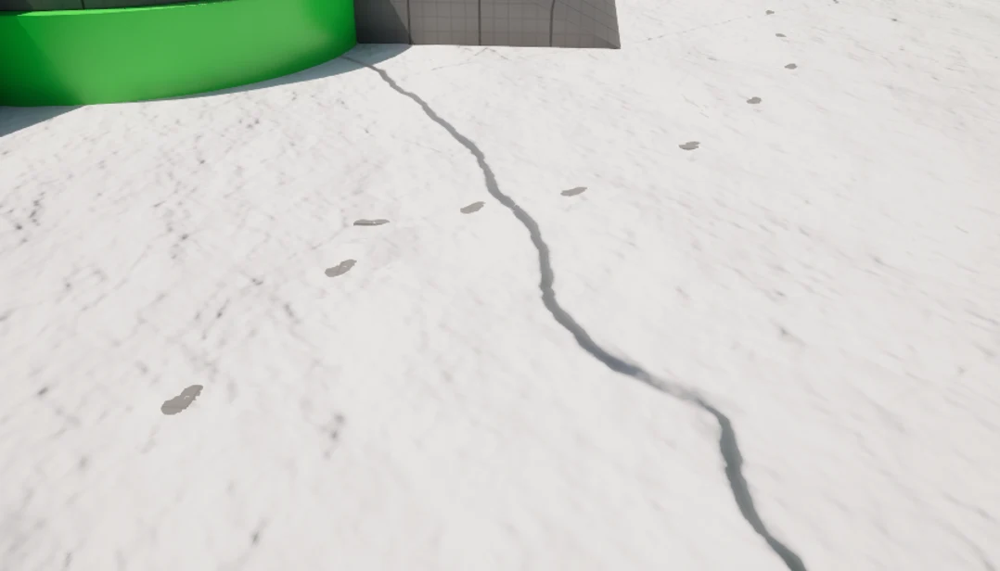
사용 기술: Unreal Engine Blueprint, Animation Notify, Material Editor, Render Target, Runtime Virtual Texture, Virtual Heightfield Mesh.
문제를 발견하고 값을 바꿔 가며 고친 순서를 아래에 이어서 적었고 좌표 계산은 각 과정에 함께 넣었으며 노말·WPO 연결과 RT 설정은 글 끝에 모아 뒀다.
1. 기본 구현 — 캐릭터가 밟은 곳의 눈이 눌리게 만들기#
1.1 목표와 출발점#
튜토리얼을 따라 Root 소켓 위치에 원형 브러시로 눈을 누르는 기능을 만든 뒤 실제 발을 디디는 시점과 위치에 맞춰 자국을 남기도록 확장했고 발바닥 모양을 만들기 전 각 발이 닿으면 그곳의 눈이 눌리도록 연결했다.
캐릭터가 지나간 뒤에도 흔적이 남도록 플레이를 시작할 때만 RT를 Clear하고 이동 중에는 초기화하지 않아 이전 자국이 계속 남는 것을 확인했으며 시간이 지난 뒤 지우는 처리는 넣지 않았다.
1.2 구현 — RT의 기록을 RVT·VHM 눈 표면에 연결#
지형을 덮은 눈 표면에 캐릭터가 밟은 부분만 눌리게 만들려면 Landscape의 기본 높이와 발 접촉 기록을 나눠 전달해야 했다.
높이 RVT에 Landscape의 기본 높이를 담아 VHM이 눈 표면을 만들게 하고 발이 닿은 위치는 별도 RT에 기록해 VHM 머트리얼에서 그 위치를 읽고 노말과 WPO를 바꾸도록 연결했다.

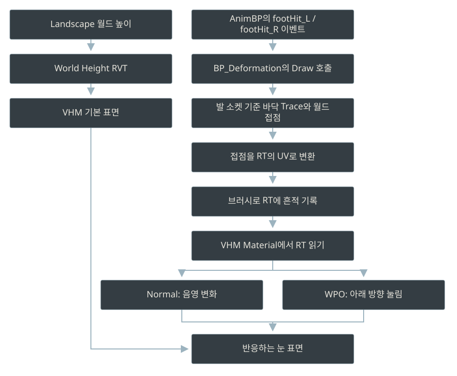
높이 RVT는 기본 지형 높이를 전달하고 RT는 밟힌 위치를 담는다. VHM 머트리얼이 접촉 RT를 읽어 눌린 경계의 음영과 정점 높이를 바꾸며 실제 노말과 WPO 연결은 글 끝의 상세 자료에 정리했다.
1.3 Root 테스트에서 발별 접촉으로 확장#
Root 소켓 위치에 찍는 원형 자국만으로는 왼발과 오른발이 디디는 자리를 따로 표현할 수 없어 각 발이 닿는 시점과 위치를 각각 받아야 했다.
걷기·뛰기 애니메이션에 발 접촉 노티파이를 추가한 뒤 각 발 중앙에 footHit_L과 footHit_R 소켓을 만들고 Root 대신 해당 소켓 위치에서 바닥을 트레이스하도록 바꿨다.
애니메이션 BP에서 footHit_L과 footHit_R 이벤트를 만들고 각 이벤트가 BP_Deformation의 Draw 함수를 호출하게 해 발을 디딜 때마다 그리기가 실행되도록 했다.
- 걷기·뛰기 애니메이션의 발 접촉 노티파이
- AnimBP의 footHit_L / footHit_R 이벤트
- BP_Deformation의 Draw 함수 호출
- 해당 발 소켓 위치에서 바닥 트레이스
- 접점에 자국 그리기
이렇게 이벤트가 그리는 시점을 알려 주고 각 발 소켓이 트레이스 시작 위치를 정해 Root 한 곳을 기준으로 찍던 자국을 발별 접점에 찍도록 바꿨다.
1.4 기록과 표면 위치 맞추기#
트레이스 위치는 월드 좌표인데 RT 안에서 그릴 위치는 UV 좌표여서 같은 접점을 두 공간에서 가리키도록 좌표를 변환해야 했다.
BP에서 발이 닿은 월드 위치를 RT의 UV로 바꿔 Draw Material에 전달하고 Draw Material to Render Target으로 그 자리에 브러시를 그린 뒤 바닥 머트리얼에서 RT 기록을 읽게 해 그릴 위치와 표면에서 읽을 위치를 맞췄다.
이 UV는 RT 안에서 자국을 찍을 위치를 뜻하고 발바닥 텍스처를 적용할 때는 이미지에서 어느 부분을 놓을지도 정해야 해서 다음 절에서 두 좌표를 나눠 설명한다.
1.5 결과와 다음 목표#
발이 닿은 위치에 원형 자국을 RT로 찍자 그곳의 눈이 눌렸고 이동한 뒤에도 기록이 남아 자국을 볼 수 있었으며 다음에는 원형을 발바닥 모양으로 바꾸고 캐릭터 방향에 맞춰 찍히게 했다.
2. 첫 번째 확장 — 원형 브러시를 발바닥 자국으로 바꾸기#
2.1 확장 목표와 변경한 부분#
발을 디딘 자리에 자국이 찍히는 것까지 확인한 뒤 캐릭터가 옆으로 방향을 바꿔 움직일 때도 발바닥 모양이 향하는 방향에 맞게 남도록 만들고 싶었다.
그래서 원형 브러시를 발바닥 텍스처로 바꾸고 Draw Material에서 이미지의 위치·크기·방향을 조절했으며 발 접촉 이벤트와 눈이 눌리는 연결은 그대로 사용했다.
발바닥 이미지로 바꾸니 원형 브러시에서는 드러나지 않던 중심과 경계 문제가 생겨 발이 닿는 자리에 이미지 중앙을 맞춘 뒤 가장자리를 정리하고 방향 회전을 차례로 더했다.
2.2 크기와 좌표 기준 정리#
발바닥 텍스처를 RT에 그리려면 먼저 발자국이 차지할 크기를 정해야 해서 이미지의 월드 크기 BrushSize를 RT 영역 크기 WorldSize로 나눠 UV 안에서 차지할 비율을 계산했다.
BrushSize / WorldSize를 이미지 UV 크기로 사용하면 RT 안에서 발자국이 차지할 비율을 정할 수 있고 텍스처 여백도 BrushSize에 포함되므로 화면에 보이는 발 모양보다 이미지 사각형이 더 크게 잡힌다. 발이 닿은 월드 위치를 RT 안 위치로 바꾸는 기준은 아래와 같다.
DrawLocation = (HitLocation − Origin) / WorldSize + 0.5
BrushUVSize = BrushSize / WorldSize
BrushLocalUV = (TexCoord − DrawLocation) / BrushUVSizeHitLocation은 발 접점의 월드 XY이고 Origin은 RT 영역 중심이며 WorldSize는 영역 전체 크기로 BP에서는 Actor Bounds의 BoxExtent × 2로 구했다. DrawLocation은 접점을 0~1 UV로 바꾼 값이고 TexCoord에서 이를 빼 발자국 크기 비율로 나누면 접점이 0인 이미지 좌표가 된다.
이 식은 월드 XY와 UV 축이 일치하는 수평 직사각형 표면 기준이라 초기 그래프처럼 중심이 0인 DrawLocation과 TexCoord − 0.5를 함께 쓰면 중심 보정이 중복된다.
2.3 문제 해결 — 발자국이 접점보다 오른쪽에 생김#
원형 브러시 좌표를 발바닥 텍스처에 연결하자 회전은 아직 넣지 않았는데도 발자국이 접점보다 오른쪽에 찍혔고 원본 발 그림은 이미지 중앙에 놓여 있었다.
좌표를 따라가 보니 발 접점의 BrushLocalUV가 (0,0)이었고 Texture Sample에 그대로 넣자 이미지 중앙 대신 모서리를 읽어 발자국이 이미지 크기의 절반만큼 옆으로 밀려 보였다.


위치와 크기를 계산한 UV에 (0.5,0.5)를 더해 발의 월드 위치를 옮기지 않고도 발이 닿은 자리에서 이미지 중앙을 읽게 했다.


DrawLocation이 0.5이고 BrushUVSize가 0.2라면 영역 UV 0.4·0.5·0.6은 이미지 UV 0·0.5·1에 대응해 접점에서 이미지 중앙을 읽게 된다. 계산 예시이며 실제 측정값은 아니고 중심 보정값은 크기로 나눈 뒤 더해야 보정값까지 확대되지 않는다.
이렇게 중심을 보정하자 발자국이 오른쪽으로 밀리는 문제는 해결됐고 0.5는 발 위치를 옮기는 값이 아니라 접점에서 읽을 이미지 주소를 중앙으로 맞추는 값이었다.
2.4 문제 해결 — 이미지 가장자리가 밖으로 늘어남#
발자국 위치를 맞춘 뒤에는 이미지 가장자리가 바깥으로 길게 늘어지는 문제가 보여 Sampler Source를 Clamp로 설정해 둔 상태에서도 원인을 살펴봤다.

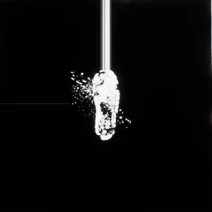
Clamp는 이미지 밖의 UV에서 0을 읽게 하는 설정이 아니라 가장자리 픽셀을 계속 읽게 해 그 값이 이미지 바깥으로 늘어나고 있었다.
처음에는 늘어진 부분을 자르려고 알파값이 0.835보다 큰 곳만 남기는 If를 만들어 RGB에 곱했는데 발자국 안의 부드러운 경계까지 같이 잘려 강한 값만 남아 원래 발 모양을 살리기 어려웠다.
그래서 알파 강도가 아니라 UV가 이미지 범위 안에 있는지를 기준으로 삼아 최종 UV에 Subtract(0.5) → Abs를 적용한 뒤 R/G를 나눠 Max의 A/B에 넣고 두 값 중 큰 값이 0.5 이하일 때만 1이 되도록 If를 설정했다. 이렇게 만든 마스크를 텍스처 알파에 곱해 이미지 사각형 바깥으로 늘어난 값을 지웠다.
범위 마스크에도 Texture Sample과 같은 최종 UV를 사용했는데 Max는 벡터의 R/G를 자동으로 비교하지 않으므로 두 채널을 나눠 A/B에 넣어야 한다. 이미지 모서리에서는 Abs 결과가 (0.5, 0.5)라 Max 값 0.5로 통과하지만 Length를 쓰면 약 0.707이 되어 모서리까지 잘리므로 사각형을 남기려면 두 축 중 큰 값을 써야 했다.

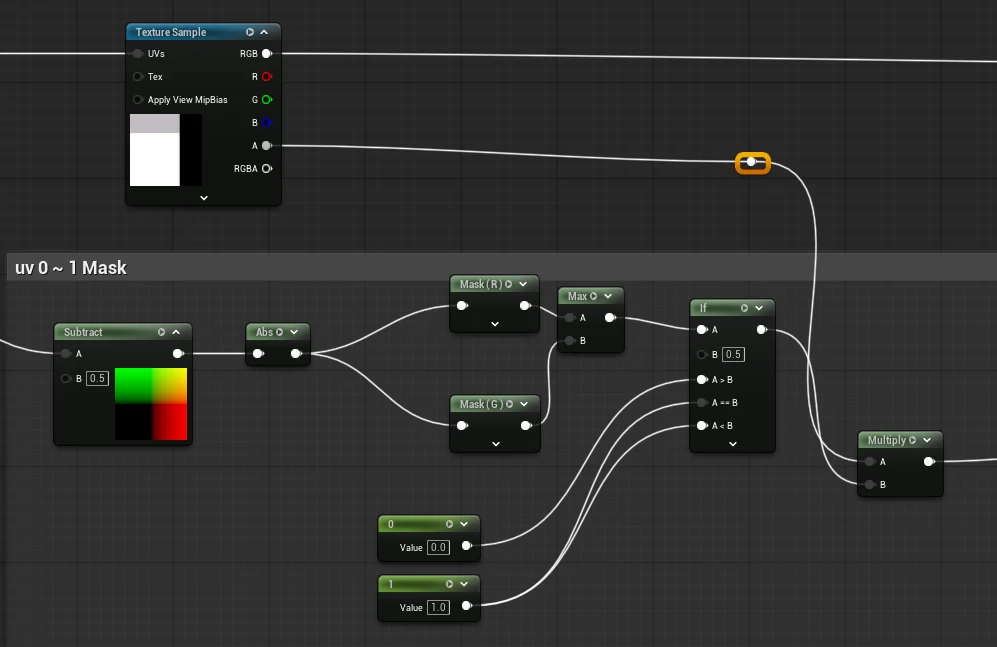
결과: 알파 강도 대신 UV 위치로 범위를 판정해 이미지 안쪽은 남기고 바깥으로 늘어난 값은 제외했다.

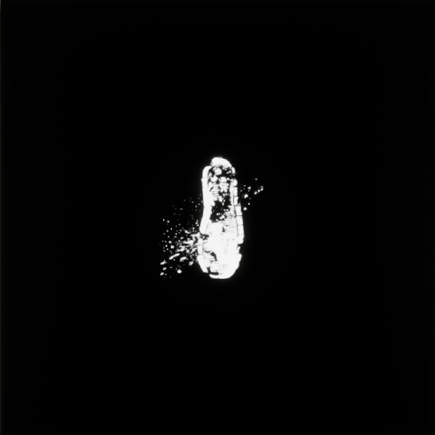
2.5 방향 확장 — 캐릭터가 향하는 쪽으로 회전#
발이 닿는 자리에 발바닥 모양이 찍히도록 위치와 경계를 맞춘 뒤에는 캐릭터가 방향을 바꿔도 자국이 그 방향을 따라가게 만들고 싶어 발 접점으로 위치를 정하고 Mesh Yaw로 회전을 넣었다.
회전값은 캐릭터 Mesh의 월드 Z 회전인 Yaw에서 가져왔고 캐릭터 참조의 Mesh에 Get World Rotation → Break Rotator를 연결해 꺼냈다.
머트리얼 Sine/Cosine의 Period가 1이라 한 바퀴를 1로 표현하므로 도 단위 Yaw를 360으로 나눈 값을 Rotation에 전달했고 90도는 0.25가 되며 180도는 0.5가 된다. 라디안 변환이 아니라 머트리얼 노드의 주기에 맞춘 값이다.
- Char Ref → Mesh → Get World Rotation → Break Rotator의 Z(Yaw)
- → Divide(360) → 머트리얼 Rotation 파라미터

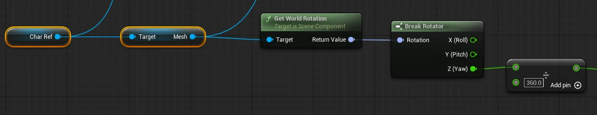
회전 중심이 발 접점에서 벗어나지 않도록 이미지 UV에서 0.5를 빼 중앙을 기준으로 돌리고 Rotation을 Sine과 Cosine에 넣어 R/G 성분과 곱한 뒤 두 좌표를 Append로 합쳐 0.5를 더해 이미지 UV로 되돌렸다. 그래프에서는 G 성분을 꺼내기 전에 Multiply(-1)로 축을 뒤집었다.

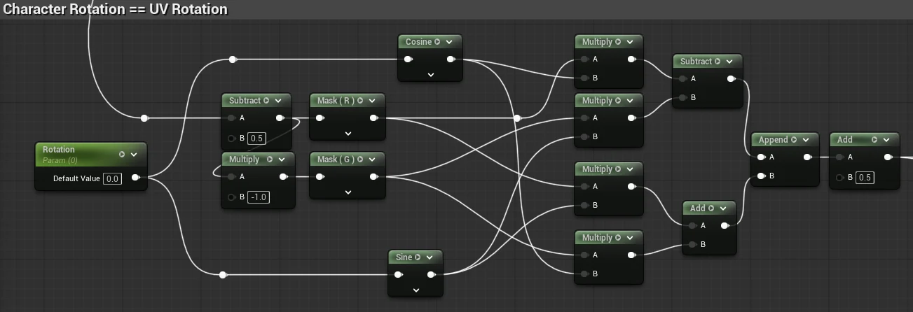
캡처의 계산을 식으로 옮기면 아래와 같다. 여기서 Sine/Cosine은 머트리얼 노드다.
CenteredUV = inputUV − 0.5
LocalU = CenteredUV.r
FlippedV = −CenteredUV.g
CosAngle = Cosine(Rotation)
SinAngle = Sine(Rotation)
회전된 U = LocalU × CosAngle − FlippedV × SinAngle
회전된 V = LocalU × SinAngle + FlippedV × CosAngle
최종 UV = (회전된 U, 회전된 V) + 0.5결과: Mesh의 월드 Yaw를 Rotation에 연결해 캐릭터가 향하는 쪽으로 발바닥 이미지를 찍었고 발 접점으로 위치를 정한 뒤 Mesh 방향으로 회전을 맞췄다.
2.6 결과 — 발바닥 모양을 실제 환경에 적용#
RVT·VHM 눈 표면과 발자국 반응을 실제 환경 레벨에 적용한 모습을 약 23초 길이로 녹화했고 전체 구간의 표본 프레임과 6~7초 구간의 연속 프레임을 보며 캐릭터 이동과 지면에 남는 발자국을 확인했다. 영상으로 확인한 범위는 화면에 보이는 결과까지이며 내부 Draw 호출 시점이나 GPU 비용을 측정한 것은 아니다.
3. 두 번째 확장 — Timeline으로 눌림 표현하기#
다음은 Timeline으로 눌림을 구현했던 과정이고 현재 사용하는 깊이 계산과 Tick 갱신 방식은 4절에 정리했다.
3.1 목표와 작업 범위#
환경에 적용해 보니 발이 닿는 순간 자국이 툭 나타나 발이 눈을 누르는 동안 자국도 서서히 깊어지도록 RT에 그리는 값을 시간에 따라 바꿔 봤다.
노티파이에서 발 검사를 시작해 발 소켓과 바닥 사이 거리를 눈 높이와 비교하며 접촉을 판단하고 Timeline을 처음부터 재생해 0~1로 변하는 DrawTime을 Draw 함수와 머트리얼에 전달했으며 재생 중 발이 눈에서 떨어지면 그리기를 멈추고 왼발과 오른발은 각각 Timeline을 사용했다.
3.2 이벤트 그래프에서 Timeline 실행#
자국이 한 번에 나타나지 않고 서서히 눌리도록 Timeline의 Float 트랙에 0~1 값을 만들고 이벤트 그래프의 Update에서 매 프레임 Draw를 호출해 RT에 그리는 강도를 계속 바꿨다.
Timeline의 Float 출력과 Draw 함수 입력을 DrawTime으로 맞췄지만 여기서 Time은 경과 시간 초가 아니라 0~1로 변하는 진행 값이며 캡처에서 왼발 Draw의 Socket Name은 foot_L_HitSocket이다.
Foot_L 이벤트
→ Timeline의 Play from Start
→ Update에서 Draw 호출
└ Float 트랙 Draw Time → Draw의 Draw Time 입력
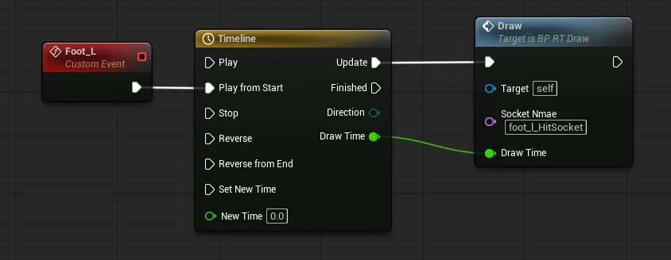
Timeline이 갱신될 때마다 그 프레임의 진행 값이 Draw에 전달되고 다음 단계에서 이 값을 머트리얼의 그리기 강도로 사용했다.
3.3 DrawTime을 드로우 머트리얼에 전달#
Timeline 값이 바뀌어도 머트리얼이 읽지 않으면 RT에 그리는 강도는 그대로여서 Draw에서 쓸 값을 먼저 MID에 넣고 그다음 RT에 그리도록 순서를 잡았다.
Draw 함수에서 Set Scalar Parameter Value로 드로우용 MID의 DrawTime을 설정한 다음 Draw Material to Render Target을 호출했고 BP와 머트리얼 Scalar Parameter 이름도 DrawTime으로 맞췄다.
- Rotation 값 설정 (Mesh 월드 Yaw / 360)
- Set Scalar Parameter Value: DrawTime = Draw에서 받은 값
- Draw Material to Render Target

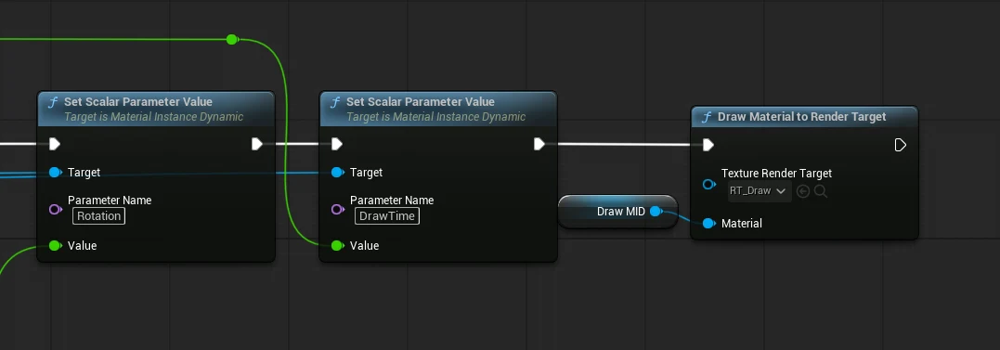
Texture Sample의 RGB에 DrawTime을 곱해 Emissive로 보냈고 Opacity에 적용했을 때보다 이 연결에서 눌림 변화가 더 잘 보였다.
Texture Sample RGB × DrawTime → Emissive 쪽 출력
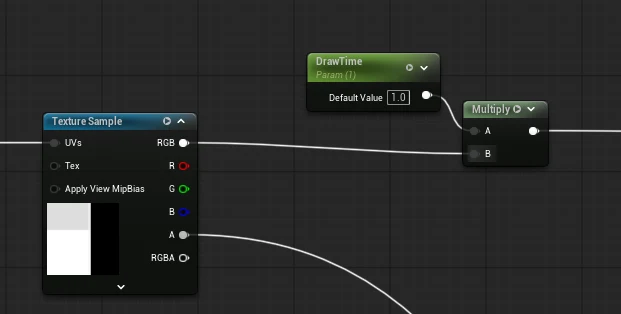
DrawTime이 0이면 곱셈 결과는 0이고 1이면 원래 발바닥이 되며 이 값이 RT를 거쳐 기존 노말·WPO 표현에 반영된다. 다만 DrawTime이 0.5여도 최종 눌림 깊이가 정확히 절반이 되는 것은 아니고 WPO에서 RT 값을 Falloff와 Depth로 다시 계산한다.
3.4 재생 시간만으로 해결되지 않은 문제#
처음에는 한 번 재생한 뒤 다음 호출에서 값이 기대대로 변하지 않아 Play from Start로 바꿨고 재생 시간을 0.1초로 두면 자국이 툭 생기고 1초로 늘리면 밟힌 부분이 길게 이어졌다. Draw가 움직이는 발 위치를 따라 계속 그려서 재생 시간만 늘려서는 원하는 눌림을 만들기 어려웠다.
그래서 발이 가까워지면 Timeline을 시작하고 다시 멀어지면 그리기를 멈추도록 바꿨으며 바닥에 붙은 채 검사 이벤트가 들어와 바로 재생되지 않게 발이 한 번 들렸는지도 기억하게 했다.
3.5 바닥까지의 거리와 눈 표면까지의 거리 구분#
처음에는 발을 디딘 순간 Distance 최솟값이 약 4.9로 보여 접촉 기준을 6으로 잡았다.
Hit Actor를 출력해 보니 트레이스가 눈 표면이 아니라 아래 바닥을 맞춰 Distance가 짧아지는 것만으로는 눈에 닿은 시점을 알 수 없었다. 계산을 걷어내고 바닥만 맞추는 테스트에서는 Distance가 0에 가까워져 0.1 미만을 기준으로 시험했으며 4.9와 6은 이전 설정값이라 고정 발 높이나 최종 기준으로 보지 않았다.
눈 표면을 올리고 나니 처음 닿는 순간이 잘 보이지 않아 천천히 관찰했고 처음 눈에 닿아 보인 시점의 Distance는 약 20이었다. 그래서 바닥 Hit와 눈 높이 사이의 차이를 접촉 비교에 반영했다.
3.6 눈 높이 기준을 접촉 검사에 반영#
트레이스가 바닥을 검출하므로 눈 표면과 바닥 사이 높이 차이를 더해 접촉을 판단했고 발 소켓에서 바닥까지의 Distance와 이 높이 차이를 비교했다.
VHM을 RVT 아래에 어태치해 RVT 위치를 조절할 때 함께 움직이게 했고 눈의 기준 높이는 VHM의 월드 Z를 읽어 저장한 RVT Z 변수로 사용했다. 노드에서는 RVTRef → Virtual Heightfield Mesh Component → Get World Location → Z로 VHM의 월드 높이를 읽었다.

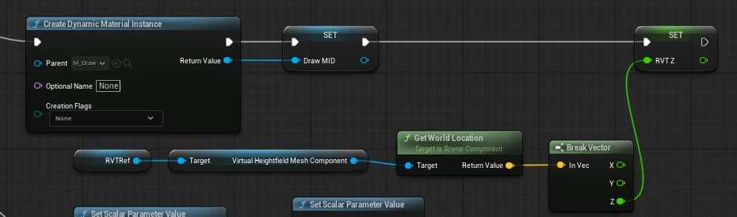
바닥 높이는 Break Hit Result → Impact Point → Z에서 가져왔다.
접촉 기준 거리 = RVT Z − Impact Point Z
Distance > 접촉 기준 거리 → 발이 기준 높이보다 위에 있음
Distance ≤ 접촉 기준 거리 → 발이 기준 높이에 닿았거나 아래로 들어옴
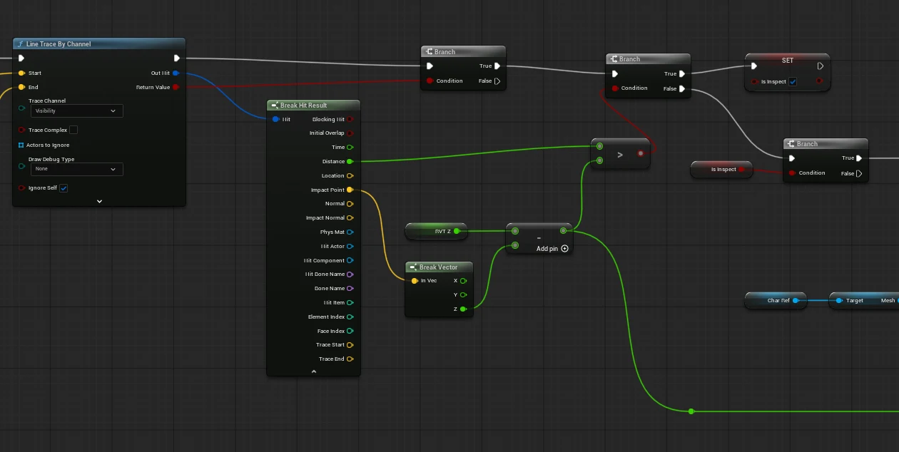
이 계산으로 발 소켓이 저장된 눈 높이까지 내려왔는지 판단했고 테스트한 환경에서는 눈 위치를 바꿔도 접촉 시점이 맞았다.
눈 높이는 RVT를 따라 움직이는 VHM의 기준 높이를 사용했다.
3.7 노티파이로 검사 시작, 착지 후 Timeline 재생#
발이 이미 바닥에 붙은 상태에서 검사가 시작되면 바로 착지로 판단돼 검사 시작 후 발이 한 번 들렸는지를 기록하고 다시 내려올 때 Timeline을 재생하도록 조건을 나눴다.
노티파이에서 Foot_L·Foot_R 이벤트를 호출해 검사를 시작하고 두 이벤트 모두 IsActive=true, IsInspect=false로 초기화한 뒤 Set Actor Tick Enabled를 실행했다.

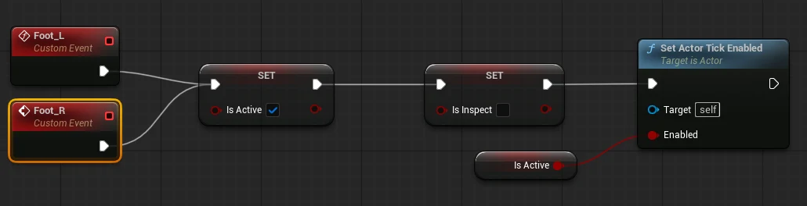
| 변수 | 캡처에서 맡은 역할 |
|---|---|
IsActive | Tick에서 착지를 검사할지 결정한다. 착지를 감지하면 false로 바꾼다. |
IsInspect | 검사 중 발이 접촉 기준보다 위에 있었던 적이 있는지 기억한다. 발 이벤트에서 false로 초기화한다. |
왼발은 foot_l_HitSocket에서 아래로 200만큼 트레이스해 Hit가 있고 Distance가 접촉 기준 이하이면 착지로 판단한다. 발이 기준보다 위에 있을 때 IsInspect를 true로 기록해 두고 다시 접촉하면 Timeline을 시작하며 캡처에서도 착지 검사 노드가 >라 접촉은 False 실행선으로 Timeline Update의 ≤ True 실행선은 Draw로 이어진다.

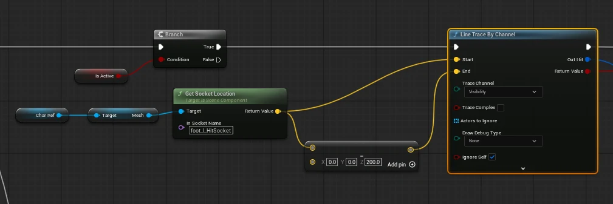
노티파이 → 발 이벤트 → 검사 상태 설정
Tick → IsActive가 true이면 Trace
→ Hit가 있으면 거리로 상태 판단
Distance > 접촉 기준 거리 → IsInspect = true (발 들림 기록)
Distance ≤ 접촉 기준 거리 → IsInspect가 true이면
IsActive = false → Timeline Play from StartIsActive를 false로 바꾸면 다음 Tick의 Branch에서 트레이스가 막히지만 Actor Tick 자체를 끄는 호출은 이 착지 경로에 없다. 노티파이는 필요한 구간에 검사를 열기 위해 넣었고 상시 트레이스 방식과 성능을 비교한 것은 아니다.
3.8 재생 중 접촉 검사와 Draw·Stop#
착지 때만 검사하면 Timeline이 재생되는 동안 발이 떠도 계속 그릴 수 있어 재생 중에도 접촉 상태를 확인하고 그리기를 멈출 시점을 정해야 했다.
Timeline Update에서 별도 트레이스로 발과 바닥 사이 거리를 확인해 Hit가 있고 거리 조건을 만족할 때만 Draw를 호출했으며 미검출이나 기준 초과 시에는 같은 Timeline의 Stop으로 돌아가게 했다.
Timeline Update → 현재 발 소켓에서 아래로 Trace
→ Hit 없음: Stop
→ Hit 있음: Distance ≤ 접촉 기준 거리
True → Draw(해당 발 소켓, Timeline의 DrawTime)
False → Stop
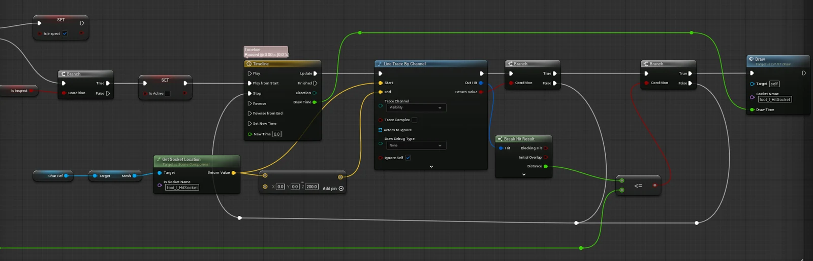
최종 왼발 캡처에서는 실행선을 Play에서 Play from Start로 옮겨 매번 처음부터 진행 값을 재생하게 했다. Update의 Distance는 새 트레이스 결과였지만 비교 기준 거리는 앞쪽 착지 검사에서 계산한 값을 가져왔다.
Stop은 이후 Timeline과 Draw 호출을 멈추지만 이미 RT에 남은 자국을 지우거나 진행 값을 끝까지 채우지는 않았다.
3.9 양발 Timeline 분리와 재생 곡선#
처음에는 왼발 여부를 Boolean으로 저장해 하나의 Timeline 뒤에서 Draw를 선택하려 했지만 한쪽 발이 재생 중일 때 다른 발 이벤트가 들어오면 선택값이 바뀔 수 있어 발마다 Timeline을 따로 두었다.
Event Tick → Sequence는 위쪽 L_Foot과 아래쪽 R_Foot 검사로 이어지고 각 구역에 트레이스와 접촉 검사 Timeline Draw·Stop 경로를 따로 연결했다.

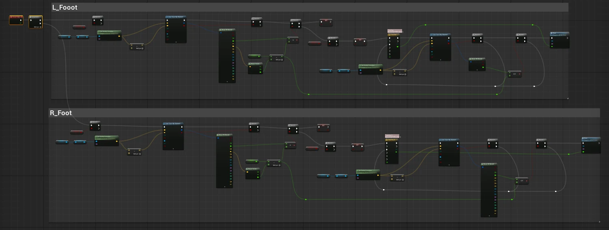
캡처의 Timeline은 0.75초 동안 DrawTime을 0에서 1까지 선형으로 올렸고 길이를 1초로 늘린 테스트에서도 동작을 확인했다.

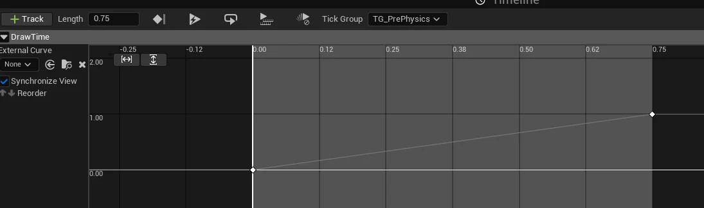
결과: 양발 Timeline에서 각자 진행 값을 해당 Draw로 전달해 양쪽 모두 동작하는 것을 확인했다. 다만 재생 시간은 고정값이고 눈 높이는 접촉 판정에만 쓰여 발의 실제 움직임과 재생 시간이 어긋나는 문제가 남았다.
4. 세 번째 확장 — 발이 눈에 들어간 깊이로 눌림 제어하기#
여기서는 평지에서 발이 눈에 들어간 깊이로 눌림을 계산한 과정을 다루고 지형 높이가 달라지는 환경에 적용하며 바꾼 눈 두께와 접촉 기준은 5절에 정리했다.
4.1 문제점 발견#
걷거나 뛸 때 발을 디디는 속도는 달라지는데 기존 Timeline은 늘 정해진 시간에 맞춰 눈을 눌러 빠른 발걸음에 맞추면 천천히 밟는 동작과 어긋나고 반대로 맞춰도 빠른 동작과 맞지 않았다.
발이 빠르게 내려오면 눈도 빠르게 눌리고 천천히 내려오면 눈도 천천히 눌리게 만들고 싶어 정해진 시간 대신 발의 실제 움직임에 맞춰 눌림을 조절하기로 했다.
4.2 노티파이와 Tick으로 발 상태 검사#
발의 깊이에 맞춰 눌림을 조절하려면 현재 위치를 계속 읽어야 했는데 처음에는 BeginPlay에서 소켓 위치를 한 번 읽어 R_SocketLocation에 저장해 둬 발이 움직인 뒤에도 Trace와 눌림 계산이 처음 위치를 사용하고 있었다.
발이 들리는 구간에 노티파이를 두고 Foot_L 또는 Foot_R 이벤트가 IsActive = true, IsInspect = false로 검사 상태를 초기화한 뒤 Actor Tick을 켜도록 했다.

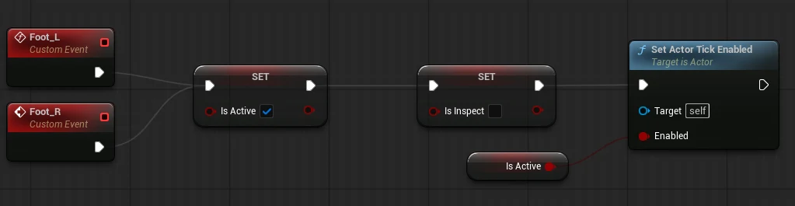
Event Tick → Sequence에서 IsActive가 true인 발의 현재 소켓 위치부터 아래로 200만큼 트레이스하고 Return Value가 true일 때 Hit 정보를 사용한다. 아래 캡처는 foot_r_HitSocket을 쓰는 오른발 경로다.
Get Socket Location을 Tick 경로에 직접 연결해 매번 현재 발 위치를 읽게 했다. Char Ref → Mesh → Get Socket Location의 출력을 Trace의 Start에 넣고 여기서 (0, 0, 200)을 뺀 값을 End로 사용했으며 같은 위치의 Z값은 눌림 계산에도 연결했다.

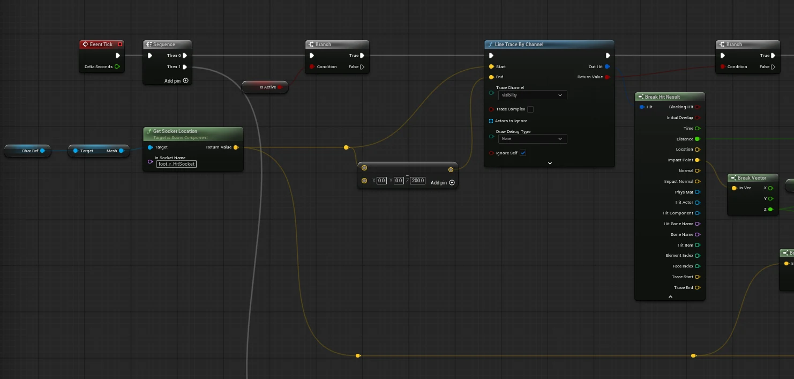
접촉 검사는 기존 조건을 유지해 Distance > (RVT Z − Impact Point.Z)일 때 IsInspect를 true로 기록하고 거리가 기준 안에 들어오면 이 상태를 확인해 Draw로 이어지게 했다.

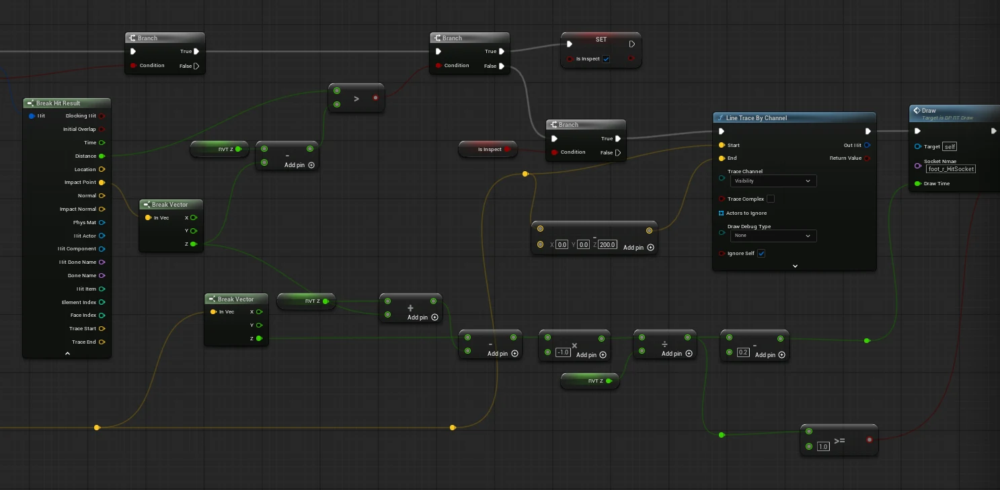
결과: IsActive가 true인 동안 Tick마다 소켓 위치를 새로 읽게 해 Trace와 눌림 계산이 시작할 때 저장한 위치에 머물던 문제를 고쳤다.
4.3 높이 차이를 눈 두께에 대한 비율로 변환#
발의 월드 Z만으로는 눈에 얼마나 들어갔는지 알 수 없어 눈 표면에서 내려간 깊이를 구하고 눈 두께로 나눈 비율을 눌림 값으로 사용했다.
계산 그래프에서는 바닥의 Impact Point.Z에 RVT Z를 더해 눈 표면 높이를 구하고 소켓 Z에서 이 값을 뺀 뒤 −1을 곱해 내려간 깊이가 양수가 되게 했다. 이 깊이를 RVT Z로 나눠 눌린 비율을 계산했다.
여기서는 바닥 Z가 0이고 눈 두께가 2인 테스트를 기준으로 RVT Z 값 2를 눈 두께로 사용했다.
눈 표면 Z = Impact Point.Z + RVT Z
높이 차이 = 소켓 Z − 눈 표면 Z
눌린 깊이 = 높이 차이 × −1
보정 전 눌림 비율 = 눌린 깊이 / RVT Z
DrawTime = 보정 전 눌림 비율 − 0.2눈 두께가 2일 때 발이 눈 표면에 있으면 눌린 깊이는 0이고 1만큼 내려오면 비율은 0.5다. 충돌 바닥까지 2만큼 내려오면 비율이 1이 되므로 눈 두께로 나눠 깊이 비율을 구했다.

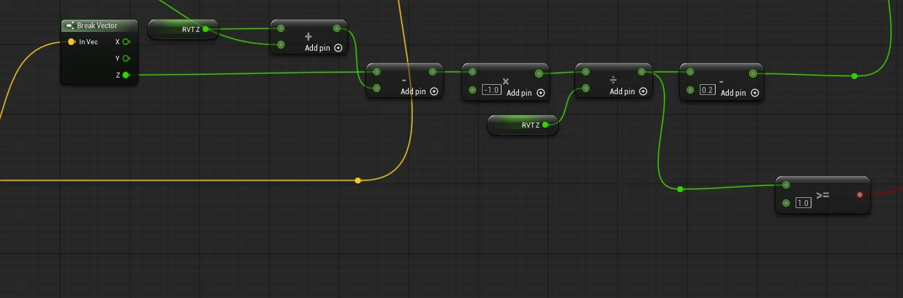
계산값을 그대로 전달했더니 발이 눈에 닿는 순간 너무 깊게 파여 보여 DrawTime에서 0.2를 빼 눌림 강도를 낮췄다. 발 위치나 애니메이션 속도를 바꾼 것은 아니며 종료 검사에는 보정 전 값을 사용한다.
| 발이 내려간 깊이 | 보정 전 비율 | DrawTime에 전달하는 값 |
|---|---|---|
| 0 | 0 | −0.2 |
| 1 | 0.5 | 0.3 |
| 2 | 1 | 0.8 |
표에는 눈 두께 2를 대입한 계산값을 적었고 접촉 초기에 전달값이 음수가 될 수 있다. 보정 의도와 입력값을 설명하는 자료이며 음수가 최종 RT에 저장되는 방식까지 측정한 것은 아니다.
4.4 Draw를 반복하고 호출 뒤 검사 종료#
발이 눈에 닿자마자 IsActive를 끄면 DrawTime이 갱신되지 않고 계속 검사하면 발이 충분히 내려온 뒤에도 같은 경로가 실행돼 눌리는 동안 매 Tick 값을 갱신한 뒤 보정 전 비율이 1 이상이 되는 Draw 호출 뒤 검사를 끝내도록 했다.
IsInspect 검사를 통과하면 소켓에서 아래로 트레이스해 Draw를 호출하고 오른발 Draw에는 foot_r_HitSocket과 계산한 DrawTime을 전달한다.
Draw 호출 뒤 보정 전 눌림 비율이 1 이상인지 확인해 true면 IsActive를 false로 바꾸고 아니면 다음 Tick에서도 값을 갱신하도록 유지했다. Draw 내부에서 IsFalling이 true면 그리기를 건너뛰므로 이 종료 처리가 RT 기록 성공까지 확인하는 것은 아니다.
IsInspect가 true
→ Trace → Draw(오른발 소켓, 보정한 DrawTime)
→ 보정 전 눌림 비율 ≥ 1
True → IsActive = false
False → 상태 유지, 다음 Tick에서 다시 계산
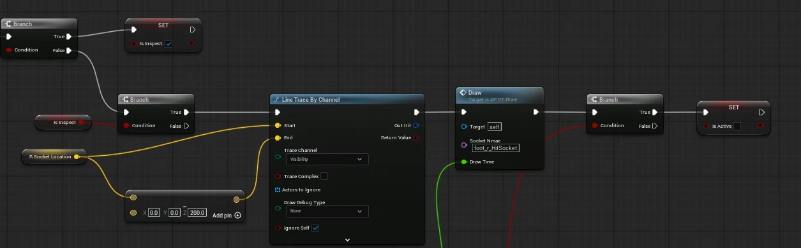
종료 비교를 ≥ 1로 설정해 계산값이 한 프레임 사이에 1을 넘어도 검사가 끝나게 했고 IsActive는 Tick 내부 Branch만 막을 뿐 Actor Tick 자체를 끄지는 않는다.
4.5 계산한 값을 기존 머트리얼에 전달#
깊이 계산값을 기존 그리기 강도 입력에 연결할 수 있어 Timeline 출력을 깊이 비율로 바꾸면서도 Draw 함수와 머트리얼의 DrawTime 이름은 유지했다. Draw의 Set Scalar Parameter Value 뒤 RT에 그리는 순서도 그대로 두고 머트리얼에서는 Texture Sample RGB × DrawTime을 Emissive Color로 보냈다.

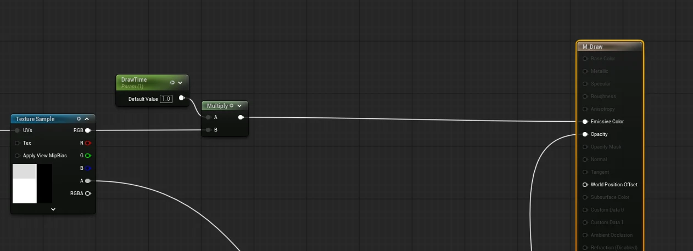
RT에 남긴 발자국을 노말과 WPO에 반영하는 연결은 그대로 사용했다.
4.6 결과#
이제 Timeline 재생 시간이 아니라 발이 눈 안으로 들어간 깊이에 따라 눌림을 정하고 발이 내려가는 동안 계산값을 Draw에 전달해 보정 전 비율이 1 이상이면 검사를 끝낸다.
접촉 직후 너무 깊게 파이던 모습은 전달값을 0.2 낮춰 조정했고 이 값은 현재 테스트를 보며 맞췄다.
5. 경사와 굴곡이 있는 Landscape에 적용하기#
5.1 문제 해결 — VHM의 위치와 눈 두께 분리#
평지 테스트에서는 RVT Z를 눈 두께처럼 썼지만 이 값은 VHM 컴포넌트의 월드 Z라 지형 높이가 달라지면 발밑 눈 두께를 나타내지 못했고 RVT Z − Impact Point.Z도 Landscape 높이에 따라 달라졌다.
지형 높이와 눈 두께를 분리하려고 SnowThickness 변수를 만들고 BP에서 MPC_VHM에 전달해 접촉 계산과 머트리얼이 같은 값을 쓰게 했다. VHM 머트리얼은 Collection Parameter에서 이 값을 읽는다.

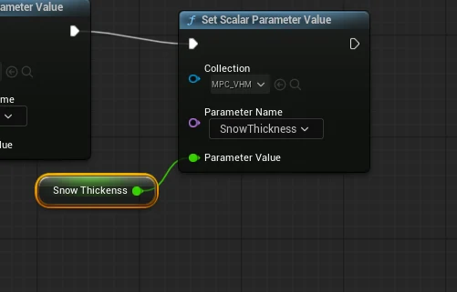
머트리얼에서 (0, 0, 1) × SnowThickness를 기존 발자국 눌림 결과에 더해 WPO로 보내 눈 표면을 지형 위로 올리고 발자국이 기록된 곳은 기존 Depth 계산에 따라 내려가게 했다.

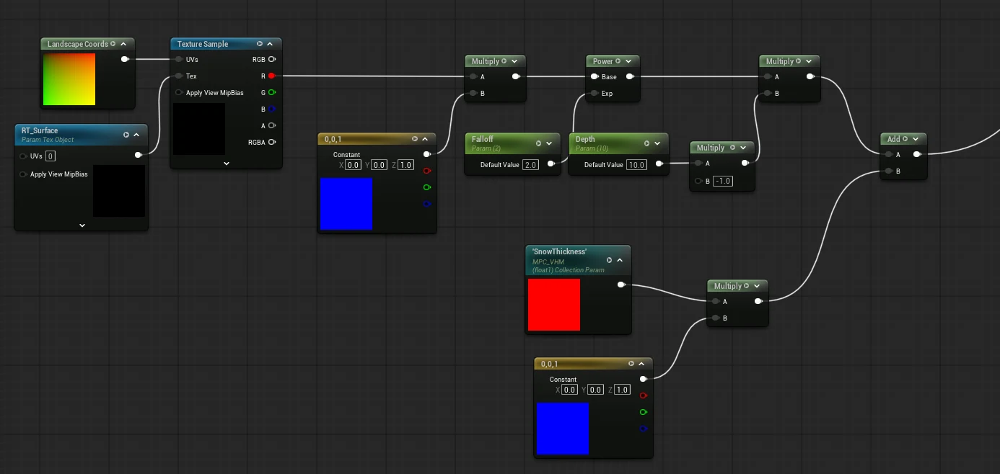
발 소켓에서 수직 아래로 트레이스한 뒤에는 Distance와 SnowThickness를 직접 비교했다. 바닥까지의 거리에 발과 지형 사이 높이 차이가 이미 들어 있어 접촉 비교에서 Impact Point.Z를 다시 빼지 않았다.
Hit가 있으면:
Distance > SnowThickness → IsInspect = true
Distance ≤ SnowThickness → IsInspect 확인 후 Draw 경로
눈 표면 Z = Impact Point.Z + SnowThickness
보정 전 눌림 비율 = (눈 표면 Z − 소켓 World Z) / SnowThickness
DrawTime = 보정 전 눌림 비율 − 0.2
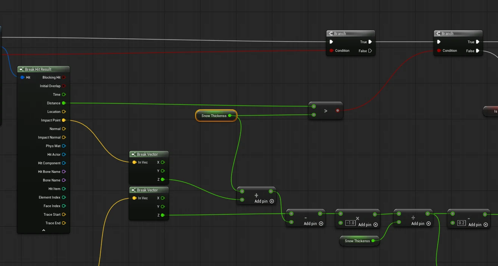
바닥의 월드 Z가 음수여도 소켓과 Impact Point를 같은 월드 좌표에서 비교하고 바닥 높이에 눈 두께를 더해 눈 표면 Z를 구하면 돼 지형 높이가 달라져도 같은 두께 기준으로 접촉과 눌림을 계산할 수 있었다.
5.2 문제 해결 — VHM이 지형의 세부 굴곡을 충분히 따라가지 못함#
눈 두께와 접촉 계산을 맞췄는데도 굴곡이 있는 곳에서는 캐릭터가 눈에 묻히거나 VHM 표면이 지형을 통과해 WPO를 끄고 비교했지만 기본 표면에서도 차이가 남았다.
Collision Mip Level과 Simple Collision Mip Level은 모두 0이었고 VHM의 LOD 0 Screen Size를 1에서 0.5로 낮추자 형태가 나아졌지만 0.25에서는 프레임이 떨어졌다. 메쉬 밀도만 높이는 대신 Landscape가 RVT에 높이를 기록하는 설정을 살펴봤다.
공식 문서에 따르면 Virtual Texture Render with Quad는 Landscape를 RVT 페이지에 단일 사각형으로 기록하는 옵션이고 High Quality PerPixel Height는 이때 높이맵을 고품질로 보간하며 이름의 Quad는 RVT 기록 방식을 뜻해 화면의 VHM 전체를 평면으로 바꾼다는 의미는 아니다. Epic: ALandscapeProxy의 Virtual Texture 옵션 ↗
변경 전에는 Render with Quad가 꺼져 있어 이 옵션을 켜고 High Quality PerPixel Height는 활성화 상태로 유지했다.
밟은 자리에서 눈 아래 흙바닥이 보이도록 Landscape의 Draw in Main Pass는 Always로 유지했다.

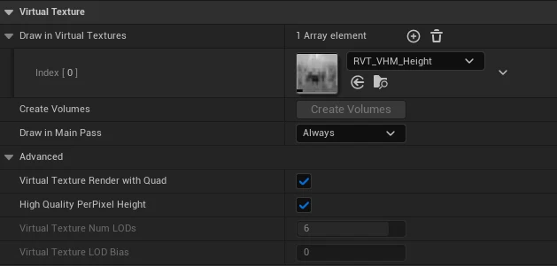
결과: 설정을 바꾼 뒤 VHM이 지형 굴곡을 따라가는 모습이 좋아졌다. 아래 비교는 WPO를 끈 상태라 눈 두께만큼 표면을 올리기 전이며 일부 구간은 원본 지형과 겹쳐 보인다.


5.3 WPO를 다시 적용한 결과#
기본 표면이 지형을 따라가는 걸 확인한 뒤 테스트를 위해 끊어 둔 WPO를 다시 연결하고 눈 두께와 발자국 변위를 함께 적용했다.
결과: 눈 표면이 SnowThickness만큼 올라가면서 지형과 겹치던 부분이 사라졌고 경사진 구간에서도 눈이 굴곡을 따라 덮이며 밟은 자리에 발자국이 남았다.

6. UpdateFoot으로 공통 로직과 발별 상태 정리#
좌우 발의 접촉 검사와 눌림 계산이 이벤트 그래프에 따로 있어 같은 로직을 두 곳에서 수정해야 했다. 계산은 한 함수에서 관리하고 검사 상태는 발마다 따로 남기도록 구조를 바꾸기로 했다.
기존 코드도 Tick의 Sequence로 양발을 순서대로 검사하고 같은 Draw 함수를 호출했지만 양쪽 경로가 IsActive와 IsInspect를 공유해 한쪽 발의 상태 변경이 다른 발 검사에 영향을 줄 수 있었다. 소켓 이름만 공통 함수에 전달해서는 해결되지 않아 검사 상태도 발마다 나눴다.
ST_FootState에 SocketName, IsActive, IsInspect를 묶어 소켓 이름과 검사 상태를 함께 전달했고 BP에는 LeftFootState와 RightFootState를 따로 둬 Tick에서 같은 UpdateFoot 함수로 보냈다.

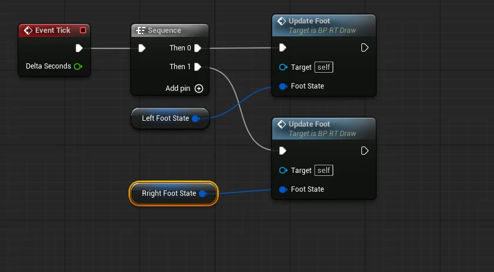
함수에서는 Break ST Foot State로 입력 상태를 읽고 IsActive로 검사 여부를 판단한 뒤 SocketName으로 현재 발 위치를 구해 바닥을 트레이스한다.

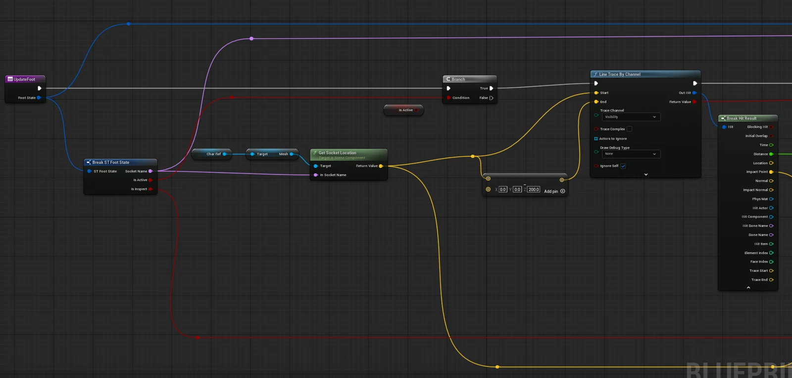
발이 눈 표면보다 위에 있으면 Set Members in ST Foot State로 IsInspect만 true로 바꾸고 착지 경로에서도 같은 구조체의 값을 확인했다. 새 구조체를 만들지 않고 전달받은 상태에서 필요한 항목만 수정했다.

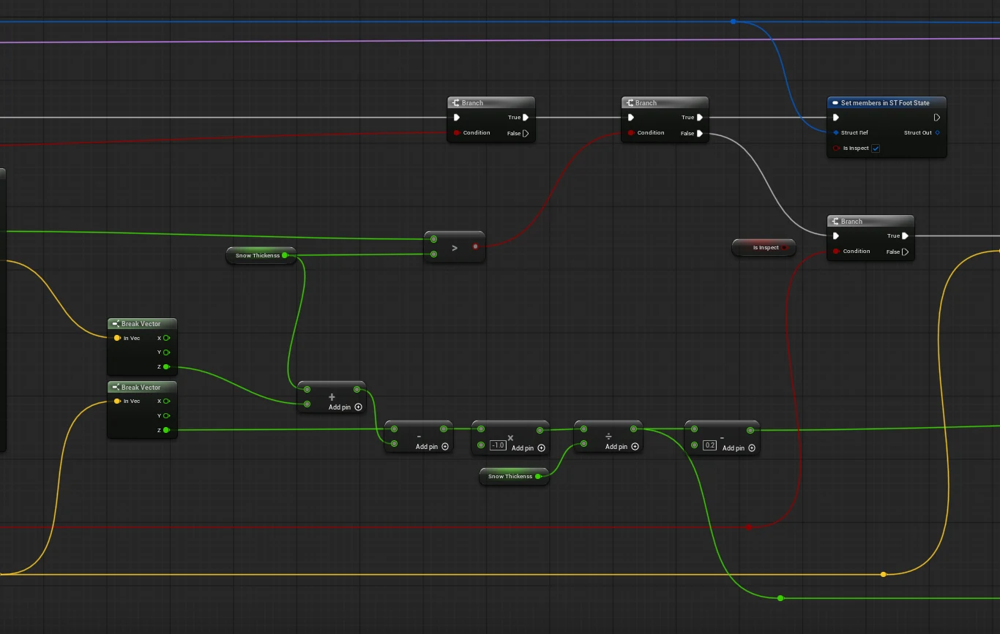
Draw에는 구조체의 SocketName과 0.2를 뺀 눌림 비율을 전달하고 종료 검사는 보정 전 비율로 해 1 이상이면 같은 구조체의 IsActive를 false로 바꿨다.

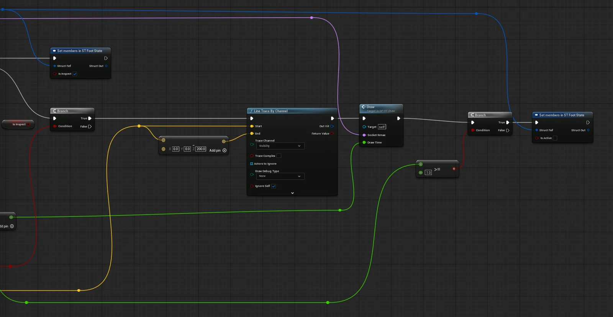
함수에서 바꾼 상태가 다음 Tick에도 이어지도록 입력 FootState에 Pass-by-Reference를 켜고 Set Members의 변경값이 호출한 쪽의 LeftFootState 또는 RightFootState에 남게 했다. 노티파이에서는 해당 발의 상태만 새 검사 값으로 설정한다.
위 캡처는 연결을 구성하던 단계의 기록이고 최종 입력 참조 전달 설정은 Blueprint 코드에서 확인했다.
거리와 눈 두께의 비교, 눌림 비율 계산, DrawTime의 0.2 보정은 기존 식을 유지했고 Draw 내부에서도 전달받은 소켓 이름으로 위치를 구해 머트리얼 파라미터에 적용했다. 좌우 계산은 한 함수에서 수정하면서 검사 시작·들림 기록·종료 상태는 발마다 따로 보관하게 됐고 리팩토링 뒤 실행 화면을 천천히 확인해 왼발과 오른발 모두 발자국이 생성되는 것을 확인했다.
상세 자료 — RT 기록을 노말과 WPO에 연결한 그래프#
VHM(Virtual Heightfield Mesh) 머트리얼에서 RT_Surface를 읽어 노말과 WPO에 연결했고 아래 그래프에서 실제 사용한 두 경로를 볼 수 있다. 같은 발자국을 표현해도 노말과 WPO가 바꾸는 값은 다르다.
| 표현 | 바꾸는 값 | 발자국에서의 역할 |
|---|---|---|
| Normal | 표면 셰이딩에 사용하는 방향 | 눌린 경계와 굴곡에서 빛 반응을 만든다. |
| WPO | 메쉬 정점의 월드 위치 | 발자국 위치의 정점을 아래로 움직인다. |
노말은 표면 방향을 바꿔 음영을 만들고 WPO는 정점을 움직여 형태를 바꾸므로 두 효과를 나눠 발자국에 미치는 영향을 확인할 수 있다. Epic: Material Inputs ↗
Normal — RT의 높이 변화와 표면 디테일 결합#
RT에 찍힌 자국의 경계가 빛에 반응하도록 주변 높이 차이에서 노말을 구하고 별도 표면 노말도 더해 발자국의 큰 굴곡과 표면 디테일을 함께 표현했다.
RT_Surface를 Texture Object로 NormalFromHeightmap의 Height Map에 넣고 Landscape Coords를 Coordinates에 연결해 주변 UV에서 읽은 높이 차이로 발자국 기울기를 구했다. Normal Map Intensity에는 상수 1을 넣었다.
주변 높이를 비교할 UV 간격은 다음 계산으로 구했다.
Height Map UV Offset
= (NormalMapOffsetPerMeter / WorldSizeMeters) × NormalMapDirection월드 길이의 샘플 간격을 영역 전체 길이로 나눠 UV 간격으로 바꾸며 두 값은 같은 단위여야 한다. 캡처에서는 NormalMapOffsetPerMeter = 0.2, WorldSizeMeters = 120, NormalMapDirection = −1을 사용해 UV Offset이 약 −0.001667이 됐고 이 값은 RT의 한 텍셀 간격과 별도로 설정했다.
그래프 주석에는 NormalMapDirection = −1을 파인 방향의 노말을 표현하는 값으로 적었고 배선에서도 이 값이 UV Offset에 곱해져 높이를 비교하는 방향을 바꾼다.

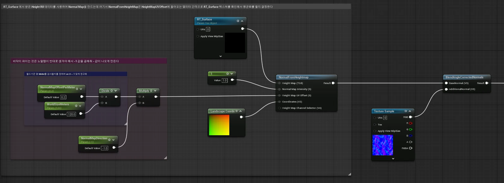
계산한 노말은 BlendAngleCorrectedNormals의 BaseNormal에 연결하고 별도 노말 텍스처의 RGB는 AdditionalNormal에 넣어 발자국의 큰 굴곡 위에 표면 디테일을 더했다.
WPO의 발자국 눌림 계산#
발자국을 음영으로만 보이지 않게 밟힌 곳의 정점도 아래로 움직이도록 RT의 발자국 값에 방향과 눌림 깊이를 적용해 WPO로 보냈다.
Landscape Coords로 RT_Surface를 읽고 R값에 (0,0,1)을 곱해 Power의 Base에 넣은 뒤 Falloff를 Exp에 연결하고 Depth × −1을 곱했다. X/Y는 그대로 두고 월드 Z 방향으로 정점을 아래로 움직이는 계산이다.
RT의 R값을 FootprintMaskValue라고 두고 0~1 사이의 값에 양수 Falloff를 적용하면 다음 식으로 쓸 수 있다.
방향 벡터 적용 = FootprintMaskValue × (0, 0, 1)
Power 적용 = (0, 0, FootprintMaskValue^Falloff)
발자국 변위 = (0, 0, −Depth × FootprintMaskValue^Falloff)캡처에서 사용한 Falloff = 2, Depth = 10일 때 FootprintMaskValue가 0 0.5 1이면 Z 변위는 각각 0 −2.5 −10이다. Falloff는 눌린 모양을 바꾸고 Depth는 전체 깊이를 정하며 음수는 아래 방향을 뜻하고 이 값은 캡처 기본값을 대입한 계산이지 실행 중 측정값은 아니다.

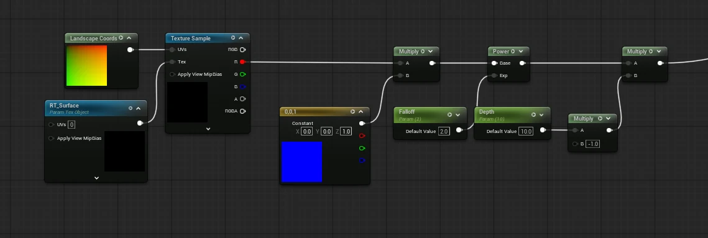
최종 WPO에서 이 발자국 변위에 5.1절의 (0, 0, SnowThickness)를 더해 밟지 않은 곳은 눈 두께만큼 올리고 발자국이 찍힌 곳은 계산한 변위만큼 내렸다.
두 경로가 공유하는 데이터와 조절값#
노말과 WPO는 같은 RT_Surface와 Landscape Coords를 사용하지만 노말은 샘플 간격과 NormalMapDirection으로 기울기를 조절하고 WPO는 Falloff와 Depth로 눌린 모양과 깊이를 조절한다. 캡처에서 WPO의 Power·Depth 계산은 NormalFromHeightmap에 연결돼 있지 않아 WPO 값을 바꿔도 노말이 같은 비율로 바뀌지는 않는다.
VHM 작업 로그의 학습 기록과 이번 그래프에서 같은 두 경로를 확인할 수 있고 발자국 기록용 RT에는 다음 설정을 사용했다.
| 항목 | 설정 |
|---|---|
| 해상도 | 4096 × 4096 |
| Render Target Format | RGBA16F (RTF_RGBA16f) |
| Clear 시점 | 플레이 시작 시 |
| 이동 중 기록 | Clear하지 않고 발자국을 그리며, 이전 자국이 남는 동작을 확인 |
Blend Mode와 같은 위치를 반복해서 그릴 때의 합성 연산은 따로 측정하지 않아 자국이 남는 결과와 구분해 적었다.
표현 품질을 결정하는 두 가지 해상도#
RT 해상도는 발자국을 얼마나 촘촘히 기록하는지 정하며 한 축의 길이가 WorldSize이고 픽셀 수가 RTPixelCount라면 한 텍셀이 나타내는 길이는 약 WorldSize / RTPixelCount다. 예를 들어 1000cm 영역을 1024픽셀에 담으면 텍셀당 약 0.977cm이고 28cm 이미지 사각형은 약 28.7픽셀을 차지하는데 이는 실제 설정이 아닌 비교용 예시다.
WPO가 만드는 모양은 메쉬 정점 배치에도 영향을 받아 RT 해상도만 높여도 정점 변위가 그만큼 세밀해지는 것은 아니다. RT에 기록한 모양과 노말의 음영 WPO로 눌린 형태는 각각 다른 단계에서 만들어진다.
확인 결과와 남은 검증#
경사 지형에서 눈이 굴곡을 따라 덮이고 이동 경로에 발자국이 남는 모습을 5.3절 영상으로 기록했지만 이 영상은 발별 상태를 나누기 전 자료다. 리팩토링 뒤 양발에서 발자국이 생기는 것은 실행 화면에서 확인했고 FootState의 참조 전달은 최종 Blueprint 코드에서 확인했으며 리팩토링 뒤 실행 영상은 아직 없다.
CPU·GPU 비용과 정합 오차는 측정하지 않았고 Blend Mode와 반복 Draw의 합성 연산, 음수 입력의 최종 저장 결과도 별도로 검증하지 않았다. RT 해상도·포맷·Clear 시점은 위 상세 자료에 적었다.
이미지와 영상은 작업 중 남긴 캡처이며 상단과 5.3절 영상은 발별 상태 분리 전 기록이고 6절 노드 캡처는 연결을 구성하던 단계의 기록이다. 최종 참조 전달 설정은 Blueprint 코드에서 확인했으며 리팩토링 뒤 실행 영상과 CPU·GPU 측정값은 없다.